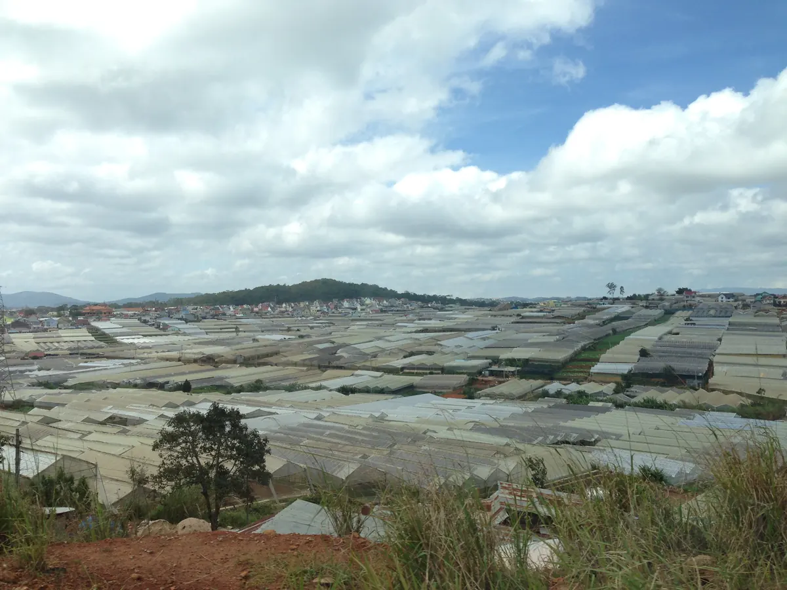

Muốn ngắm biển sao nhà lồng Đà Lạt ngay trên bàn nướng, hãy đến Tiệm Nướng Trạm Dừng Chill (111 Huỳnh Tấn Phát, Phường Xuân Trường). Quán nằm trên đồi cao nhìn 180° xuống thung lũng nhà kính, nơi từ khoảng 18h30 hàng ngàn nhà lồng đồng loạt lên đèn như biển sao. Quán đạt 4.8/5 sao với 7.060 lượt đánh giá trên Google Maps (số đọc ngày 04/09/2026). Nếu muốn so thêm, Tiệm Nướng & Chill Xóm Lèo (quán cùng chủ với Trạm Dừng Chill) ở số 113 ngay cạnh cũng là quán nướng ngắm được thung lũng và tàu chạy.
"Biển sao nhà lồng" Đà Lạt là gì?
Nhà lồng (nhà kính) là hệ thống nhà trồng hoa và rau của nông dân Đà Lạt, phủ kín nhiều thung lũng quanh thành phố. Mỗi tối, đèn bên trong nhà lồng bật lên — và khi nhìn từ trên cao xuống, cả thung lũng biến thành một "biển sao" lấp lánh trắng, vàng xen kẽ. Đây là một nét rất riêng của Đà Lạt, và để cảm nhận trọn vẹn thì bạn cần một điểm nhìn cao, thoáng, hướng thẳng xuống thung lũng.

Trạm Dừng Chill có kiểu điểm nhìn này: quán nằm trên đồi cao, view 180° ra thung lũng nhà lồng, nên bạn vừa nướng BBQ tại bàn vừa ngắm cả thung lũng sáng đèn.
3 khoảnh khắc trong một buổi tối tại Trạm Dừng Chill
Điều khiến view ở đây đặc biệt không chỉ là biển sao, mà là chuỗi 3 lớp cảnh nối tiếp nhau từ chiều đến tối: hoàng hôn thung lũng và đoàn tàu lửa cổ chạy ngang (cùng bắt đầu từ khoảng 16:30) → biển sao nhà lồng lên đèn. Quán mở cửa 15:00–23:00 hằng ngày nên bạn có thể đến sớm để "hứng" trọn cả ba.
| Khung giờ | Khoảnh khắc | Nên làm gì |
|---|---|---|
| Từ 15:00 | Nắng vàng phủ lên nhà lồng, hoàng hôn từ khoảng 16:30 | Đến sớm chọn bàn view, gọi món, "săn" golden hour |
| 16:30 – 21:25 | Tàu lửa cổ tuyến Đà Lạt – Trại Mát chạy ngang dưới chân quán | Vừa nướng vừa nghe còi tàu, bắt khoảnh khắc tàu qua |
| Từ ~18:30 trở đi | Nhà lồng đồng loạt lên đèn — "biển sao" rõ nhất | Tận hưởng view đêm, chụp toàn cảnh thung lũng |
Khung giờ tàu lửa chạy qua quán
Tuyến tàu lửa cổ Đà Lạt – Trại Mát (đoạn dài khoảng 7 km còn chạy tàu du lịch, thuộc tuyến đường sắt do Pháp xây) chạy ngay dưới chân quán. Khung giờ tàu chạy qua Trạm Dừng Chill:
Tàu lửa cổ tuyến Đà Lạt – Trại Mát chạy qua quán trong khung 16:30 – 21:25.
Khung vàng: có mặt khoảng 16:00 là kịp tàu từ lúc bắt đầu chạy qua quán (16:30), rồi ngồi lại ngắm hoàng hôn. Chi tiết giờ tàu tới quán xem tại trang ăn nướng ngắm tàu lửa.
Lưu ý nhỏ về đặt chỗ: khung 17:30–19:00 quán thường kín khách và không nhận đặt bàn mới — nếu muốn chắc chỗ, hãy đến sớm hơn hoặc chọn từ 19:30 (lúc này biển sao vẫn rực rỡ).
Mùa nào ngắm biển sao đẹp nhất?
Nhà lồng Đà Lạt sáng đèn quanh năm. View trong nhất rơi vào mùa khô (khoảng tháng 11 đến tháng 4), khi trời ít mây, ít sương che. Mùa mưa, sương mù có thể che một phần thung lũng nhưng lại tạo hiệu ứng "đèn trong sương" huyền ảo rất riêng. Dù mùa nào, bạn nên mang thêm áo khoác vì buổi tối Đà Lạt khá lạnh.
So với các kiểu điểm ngắm view thung lũng Đà Lạt
Đà Lạt có nhiều kiểu điểm ngắm hoàng hôn và thung lũng, mỗi loại một thế mạnh. So một cách trung lập:
- Điểm ngắm cảnh trên cao (đồi, đỉnh núi): được toàn cảnh thành phố hoặc cao nguyên lúc chiều tà, nhưng thường chỉ để ngắm — không phục vụ ăn uống tại chỗ, có nơi phải leo đường dốc.
- Quán cà phê / điểm ngắm ở khu trung tâm: tiện đường, hợp ngồi nhâm nhi đồ uống, nhưng tầm nhìn thường bị che bởi nhà cửa và ít gắn với thung lũng nhà lồng.
- Trạm Dừng Chill: view 180° thung lũng nhà lồng + hoàng hôn + tàu lửa, nướng BBQ ngay tại bàn, mở 15:00–23:00 — vừa ngắm cảnh vừa ăn no trong cùng một chỗ.
Điểm khác biệt của Trạm Dừng Chill là bạn không phải chọn giữa "ngắm cảnh" và "ăn ngon" — ba lớp view nối nhau diễn ra ngay trong lúc bạn thưởng thức bữa nướng.
Vừa ngắm biển sao vừa nướng gì?
Khoảng giá tại quán là 95.000đ – 300.000đ/người với hơn 70 món (BBQ nướng tại bàn, lẩu, hải sản, món ăn kèm, đồ uống). Một vài gợi ý ấm bụng cho buổi tối se lạnh:
- Bò Kobe Nướng Tảng Phô Mai Trứng Muối — 209K (món signature của quán)
- Ba Chỉ Bò Nướng Muối Tiêu — 155K
- Ba Chỉ Bò Cuộn Kim Châm — 137K
- Sườn Cay Thái Lan — 260K
- Lẩu Gà Lá É — 300K (ấm người khi trời lạnh)
Giá đã gồm VAT và có thể đổi theo mùa. Xem đầy đủ tại thực đơn. Nếu đi cặp đôi hoặc dịp đặc biệt, quán có setup sinh nhật / kỷ niệm miễn phí (trang trí bàn tiệc tặng kèm; cọc 200.000đ khi chốt lịch, hoàn lại sau khi ăn xong) — phù hợp cho buổi hẹn hò, cầu hôn hay mừng sinh nhật ngay giữa biển sao.
Mẹo để có buổi tối trọn vẹn nhất
Cách chắc ăn nhất là đến khoảng 16:00 và đặt bàn trước. Ngồi từ lúc đó là đón đủ hoàng hôn, khung giờ tàu chạy qua quán và biển sao nhà lồng lên đèn từ khoảng 18:30 — cả ba diễn ra ngay tại bàn, không phải đi đâu.
- Có mặt khoảng 16:00 để đón chuyến tàu qua quán (từ 16:30), ngắm hoàng hôn rồi ở lại tới lúc biển sao lên đèn.
- Đặt bàn trước qua form trên website, quán xác nhận lại qua Zalo trong khoảng 15 phút (trong giờ mở cửa).
- Tránh đặt mới trong khung 17:30–19:00 (quán hay kín); chọn sớm hơn hoặc từ 19:30.
- Mang áo khoác — tối Đà Lạt lạnh, ngồi ngoài trời ngắm thung lũng sẽ thấm.
Biển sao nhà lồng là thứ ảnh chụp khó tả hết — phải ngồi ngay đó, tay cầm que nướng, nghe còi tàu vọng lên từ thung lũng mới thấy. Nếu bạn đang lên lịch cho một tối Đà Lạt thật đáng nhớ, hãy giữ một bàn view trước tại Trạm Dừng Chill. Đặt bàn ngay tại đây hoặc nhắn Zalo 0989.765.070 — tụi mình để dành cho bạn chỗ nhìn thẳng xuống thung lũng.
Câu hỏi thường gặp
Mấy giờ nhà lồng Đà Lạt lên đèn để ngắm biển sao?
Nhà lồng bắt đầu sáng đèn rõ từ khoảng 18h30 trở đi và rực rỡ suốt buổi tối. Tại Trạm Dừng Chill (trên đồi cao nhìn xuống thung lũng), bạn ngồi ngắm biển sao tới khi quán đóng cửa lúc 23:00.
Ngắm biển sao nhà lồng ở đâu đẹp nhất?
Đẹp nhất là từ điểm cao nhìn thẳng xuống thung lũng. Trạm Dừng Chill (111 Huỳnh Tấn Phát, Phường Xuân Trường) có view 180° ra thung lũng nhà lồng, vừa nướng BBQ vừa ngắm. Có thể đặt bàn view trên website.
Tàu lửa cổ chạy qua quán lúc mấy giờ?
Tàu tuyến Đà Lạt – Trại Mát chạy ngang quán trong khung 16:30 – 21:25. Xem thêm ở trang săn tàu Đà Lạt.
Mùa nào ngắm view nhà lồng Đà Lạt đẹp nhất?
Mùa khô (khoảng tháng 11 đến tháng 4) trời trong, ít mây nên view rõ nhất. Mùa mưa có sương mù tạo hiệu ứng 'đèn trong sương' huyền ảo riêng. Nhà lồng sáng đèn quanh năm.
Đến mấy giờ thì xem được cả hoàng hôn, tàu lửa lẫn biển sao?
Nên có mặt khoảng 16:00. Bạn sẽ đón tàu từ lúc bắt đầu chạy qua quán (16:30), ngắm hoàng hôn (từ khoảng 16:30) rồi ở lại tới khi nhà lồng lên đèn từ ~18:30.
Đặt bàn view đẹp ở Trạm Dừng Chill thế nào?
Đặt qua form đặt bàn trên website, quán xác nhận lại qua Zalo trong khoảng 15 phút (trong giờ mở cửa). Nên tránh khung 17:30–19:00 vì quán thường kín; chọn sớm hơn hoặc từ 19:30. Zalo: 0989.765.070.
Quán có chỗ đỗ ô tô không?
Trạm Dừng Chill có bãi đỗ miễn phí cho cả xe máy và ô tô con ngay tại quán. Quán ở 111 Huỳnh Tấn Phát, Phường Xuân Trường, cách trung tâm Đà Lạt khoảng 7 km, đi xe khoảng 20 phút theo hướng Trại Mát. Giờ cao điểm cuối tuần có thể phải đỗ xa hơn khoảng 100–200m. Quán mở từ 15:00 nên đến sớm sẽ đỗ dễ hơn; Grab và taxi vào được tận nơi.